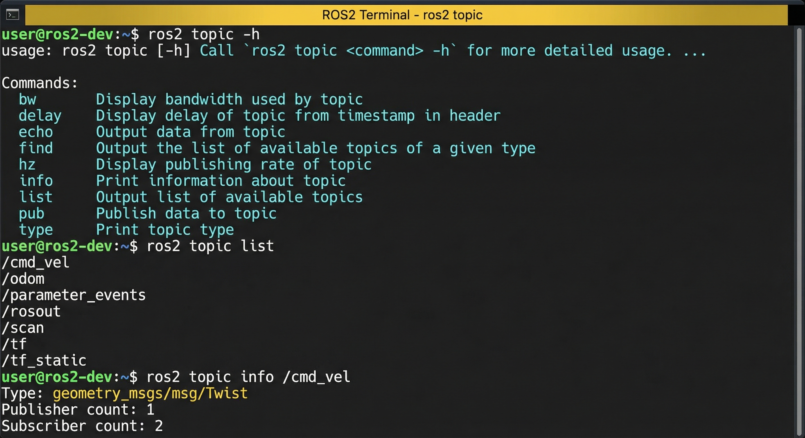

话题工具箱：ros2 topic命令详解
常用命令速查表
| 命令 | 功能 | 示例 |
|---|---|---|
| list | 列出话题 | ros2 topic list |
| echo | 查看数据 | ros2 topic echo /chatter |
| info | 话题信息 | ros2 topic info /cmd_vel |
| hz | 发布频率 | ros2 topic hz /odom |
| pub | 发布消息 | ros2 topic pub ... |
| bw | 带宽占用 | ros2 topic bw /scan |
| delay | 传输延迟 | ros2 topic delay /image |
提示：使用 --help 查看完整参数，如 ros2 topic echo --help